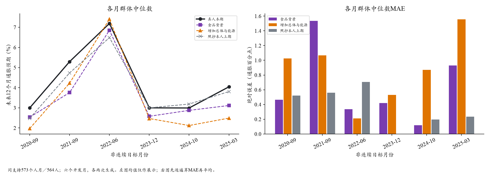
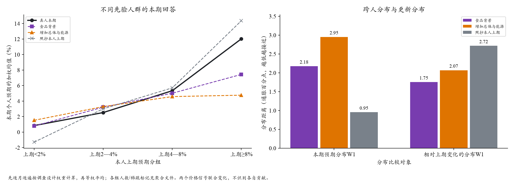

水上挽月 · SCE历史条件重建 · 2026-10-21
补充公共价格统计后，回答进一步集中
同一Qwen2.5-72B、人口与个人历史，比较食品价格背景与额外列出总体CPI、能源同比。六期各96人，每组生成两遍，实际2,304次请求全部完成。
本轮取舍：不采用这项改动。两个高通胀月份的群体中心更接近真人，但其余四期变差；六期跨人分布距离都扩大，人际差异都进一步收窄。这次结果没有支持恢复整张宏观统计表。
群体中位数MAE · pp0.634 → 0.877同支持照抄上期 0.370
跨人分布W1 · pp2.177 → 2.952越低越接近真人；照抄 0.954
跨人IQR · pp3.162 → 2.308真人 4.703，原有分歧缺口扩大
1. 本轮只改变价格背景中的一段信息
两组保留相同采购角色和食品分类、8篇新闻、人口画像、合成支出与央行信心，以及本人真实上期Q8/Q9与更早摘要。新增段只列同份BLS首发报告的总体CPI、能源12个月涨幅和发布时间；温度0.5、JSON格式与归一化规则相同。
月份为2020-09、2021-09、2022-06、2023-12、2024-10、2025-03。对照仍有新闻和政策，可能已涉及同样事实；这是明确列出两项统计的联合处理，不是完全不知情与首次获知的区别。
2. 局部中心改善，没有扩展为整体分布改善
2021-09中位数MAE为1.536→1.067，2022-06为0.337→0.211；另外四个月变差。RMSE为0.794→0.980。主指标均由每人Q9拟合密度均值，再计算跨人的调查设计加权中位数；不混入Q8。

573共同个人月／564人；图中六个时点不连续。先逐月逐遍计分，再等权平均；折线不代表中间月份的实际轨迹。
3. 高预期人群没有被保留下来
上期预期≥8%的122个人月，真人本期组均值为12.024%，食品背景为7.438%，补充统计后为4.762%。上期<2%的人群，真人为0.841%，模型从0.785%变为1.525%，已有接近的部分也被推向中间。
2021-09最能说明中心与结构的区别：全体中位数更准的同时，上期≥8%的20人，真人本期均值13.896%，模型却6.402%→5.455%。高、低数理两组及学历×就业六格的W1均变差；其中高中及以下格子多数月份稀疏，作描述使用。

条件均值先在各月各遍按设计权重计算，再平均。变化W1仍优于完全不更新的照抄，但处理组变差；不能据此替代本期水平和逐人误差。
4. 结论的统计范围
- W1差值为+0.776pp，按真人身份聚类重抽样的95%区间为[+0.541,+0.921]；这是六个固定开发月上的恶化证据。
- 中心MAE差值+0.243pp，区间[−0.005,+0.475]跨0；不能把点值变差扩展为所有样本都显著变差。
- 两次生成方向一致；删一月后W1差值仍为正。原答均合法的523个人月上，W1仍2.236→3.055。
- 这些月份都已参与开发，不是独立时间验证；实际模型托管权重与完整知识截止未获固定证明。
5. 可能的机制与后续取舍
观察结果与“公共数字成为共同锚点”的解释一致：模型可能在纠正旧信念、判断合理通胀，而任务要求复现一个人的持续看法。它仍是机制假设；本轮未单独区分数字内容、显著性、长度和位置，也不能证明真人会同样反应。
本次不恢复宏观整表、不自动追加付费实验。保留食品背景作为这次机制底座，原12期参考配置不变；下一步围绕个人信念为何被覆盖来收窄方案，并保留现成候选的独立月份验证。
执行与复现
实际费用$2.156／$11上限，0接口错误、0重试。模型调用57.8分钟，计分27.1秒、缓存汇总0.30秒，均不含Agent开发与图文整理时间。原始Q9合法2244/2304，64份等比例归一化后全部可用；原始回包完整保留。
完整结果与复算命令 · 实验配置与依据 · 主聚合JSON · 支持敏感性 · 费用收据
Kimi面板数据入口：outputs/sce_price_background_evaluation_20261021_v1/。本页只有聚合与图，不包含个人记录；未改动Kimi的面板源码。